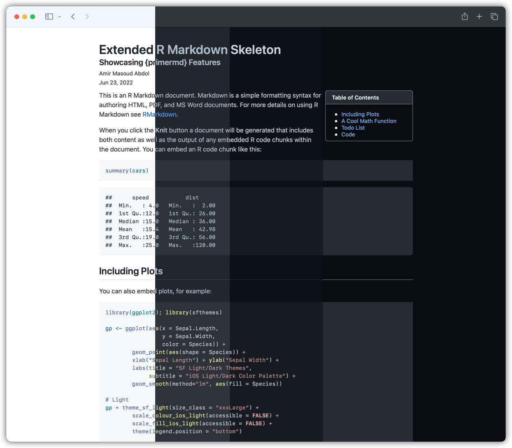

primermd is a versatile template for rmarkdown based on Primer CSS developed by GitHub. Primer CSS is very readable, accessible, and responsive; however, it is really not meant to be used for a simple one-page document. That being said, I quite like it, and that‚Äôs why this package exists! I wanted to be able to get as close as I can to GitHub‚Äôs Markdown rendering, so, I went with their framework! üôÉ
primermd is, by design, not very customizable, in fact, I have intentionally removed some basic options that you can find in similar template packages, e.g., prismjs syntax highlight, Font Awesome. As said, my main goal is to replicate GitHub’s Markdown rendering, and add some of the features that they are adding to their website, e.g., check boxes, alerts, etc.
In the future, if I have some time, I would like to continue tweaking this, and keeping it up to date with GitHub’s changes, and aesthetic.

Installation
You can install the latest development version from GitHub:
remotes::install_github("amirmasoudabdol/primermd")and, hopefully soon, you can install the released version of primermd from CRAN:
# ⚠️ Not Working Yet!
install.packages("primermd") Usage
You may activate the primermd theme by adding the following line to the top of your R Markdown file.
Customizations
{primermd} offers a few customization options and features, e.g., theme, title customization. You can tweak the behavior, and looks of the theme by adding more parameters to your YAML header as described below.
Themes
Primer CSS automatically adjusts to user’s system settings, and it delivers either light, or dark theme of the page accordingly based on the current appearance of the system. If you wish to disable this automatic behavior, you may set the auto_theme variable to false, and as a result adaptive theme-ing will be disabled.
In addition to default light and dark themes, you can choose two darker themes, i.e., dark_dimmed, dark_high_contrast. You can select either of these themes using light_theme and dark_theme parameters.
⚠️ At the moment, RStudio does not adapt to user preferences and therefore {primermd} does not work as expcted inside the RStudio. However, if you open the generated file in your browser you’ll get the adaptive behavior.
Title Customization
By default, {primermd} adds the title, subtitle, author and the date to the top of the document; however, you can disable this by setting the header parameter to false.
Footer Customization
By default, the footer of the page contains the authors names’, but it is possible to hide the footer entirely by setting the footer parameter to false.
List Style
By setting the list_style_none parameter to true, you can remove bullets from an unordered list or numbers from an ordered list.
Enable the Checkboxes
By setting the enable_checkboxes parameter to true, you can enable the check box controls such that readers can interact with them.
Syntax Highlight
By setting the highlight to false, you can disable the syntax highlighting. {primermd} does not allow you to change the color scheme of the code highlighter. I’m working on enabling this, but it is a bit tricky because I want to have a list of schemes that look good with all the settings.
Todos
- Make it possible to change the width of the page
- Make use of Octicons, replacing the Font Awesome
-
Add
use_primermd() - Find a matching color scheme for syntax highlighting
- Make sure that the table of content looks alright